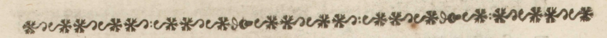
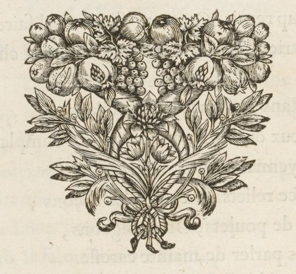

Page de titre
Fables choisies,
mises en vers
Par M. de la Fontaine
A Paris,
Chez Claude de Barbin👤, au Palais sur le perron
de la Sainte Chapelle
MDCLXVIII
Avec privilege du Roy.

Fable 5
10
Fables choisies.

Fable cinquiesme.
Le loup & le chien.
Un Loup n'avait(1) que les os & la peau,
Tant les Chiens faisaient(2) ... garde.
Ce Loup rencontre un Dogue aussi puissant que beau,
Gras, poly, qui s'était(3) fourvoyé par mégarde.
L'attaquer, le mettre en quartiers,
Sire Loup l'eût(4) fait volontiers:
Mais il fallait(5) livrer bataille;
Et le Mâtin était(6) de bataille
A se défendre hardiment.
Le Loup donc l'aborde humblemnt,
Sur son embonpoint qu'il admire.
Il ne tiendra qu'à vous, beau sire,
D'estre aussi gras que mou, lui(8) repartit le Chien:
Quittez les bois, vous ferez bien :
Vos pareils y sont misérables,
Cancres, haires, et pauvres diables,
Dont la condition est de mourir de faim.
Car quoi(9) ? Rien d'assuré, point de franche lipée.
Tout à la pointe de l'épée:
Suivez-moi(10) ; vous aurez un bien meilleur destin.
Le Loup reprit : Que me faudra-t-il faire ?
Presque rien, dit le Chien : donner la chasse aux gens
Portans bastons, et mendians;
Flater ceux du logis, à son Maistre complaire ;
Moyennant quoi(11) vostre salaire
Sera force reliefs de toutes les façons:
Os de poulets, Os de pigeons,
Sans parler de mainte caresse.
Le loup déjà se forge une s(12)elicité
Qui le fait pleurer de tendresse.
Chemin faisant il vit le col du Chien, pelé :
Mais encor ? collier dont je suis attaché
De ce que vous voyez est peut-être la cause.
Attaché ? dit le Loup : vous ne courez donc pas
Où vous voulez ? Pas toujours, mais qu'importe ?
Il importe si bien, que de tous vos repas
Je ne veux en aucune sorte,
Et ne voudrais pas même à ce prix un tresor.
Cela dit, Maistre Loup s'enfuit, et court encor.
Tant les Chiens faisaient(2) ... garde.
Ce Loup rencontre un Dogue aussi puissant que beau,
Gras, poly, qui s'était(3) fourvoyé par mégarde.
L'attaquer, le mettre en quartiers,
Sire Loup l'eût(4) fait volontiers:
Mais il fallait(5) livrer bataille;
Et le Mâtin était(6) de bataille
A se défendre hardiment.
Le Loup donc l'aborde humblemnt,
Livre I.
11
Entre ce propos, & lui(7) fait complimentSur son embonpoint qu'il admire.
Il ne tiendra qu'à vous, beau sire,
D'estre aussi gras que mou, lui(8) repartit le Chien:
Quittez les bois, vous ferez bien :
Vos pareils y sont misérables,
Cancres, haires, et pauvres diables,
Dont la condition est de mourir de faim.
Car quoi(9) ? Rien d'assuré, point de franche lipée.
Tout à la pointe de l'épée:
Suivez-moi(10) ; vous aurez un bien meilleur destin.
Le Loup reprit : Que me faudra-t-il faire ?
Presque rien, dit le Chien : donner la chasse aux gens
Portans bastons, et mendians;
Flater ceux du logis, à son Maistre complaire ;
Moyennant quoi(11) vostre salaire
Sera force reliefs de toutes les façons:
Os de poulets, Os de pigeons,
Sans parler de mainte caresse.
Le loup déjà se forge une s(12)elicité
Qui le fait pleurer de tendresse.
Chemin faisant il vit le col du Chien, pelé :
B ij
12
Fables choisies.
Qu'est-ce ... Quoi(13) rien ? Peu de chose.Mais encor ? collier dont je suis attaché
De ce que vous voyez est peut-être la cause.
Attaché ? dit le Loup : vous ne courez donc pas
Où vous voulez ? Pas toujours, mais qu'importe ?
Il importe si bien, que de tous vos repas
Je ne veux en aucune sorte,
Et ne voudrais pas même à ce prix un tresor.
Cela dit, Maistre Loup s'enfuit, et court encor.

Chevron